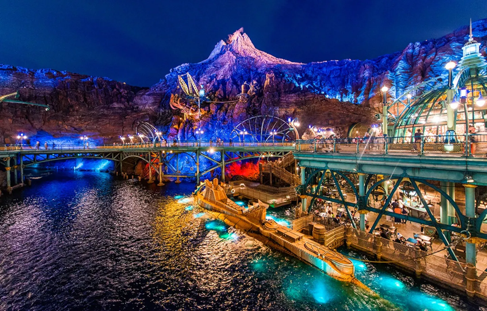

Top Destinations

Shibuya
Experience the world’s busiest pedestrian crossing surrounded by shopping and nightlife.

Asakusa
Home to the iconic Senso-ji Temple, one of Tokyo’s oldest and most colorful landmarks.

Shinjuku
Known for its skyscrapers, nightlife, and the tranquil Shinjuku Gyoen National Garden.

Disney Sea
Tokyo DisneySea is a unique Disney theme park, offering immersive adventures for all ages.

Akihabara
Paradise for anime, gaming, and electronics lovers.

Odaiba
A futuristic entertainment hub with stunning views of Tokyo Bay.